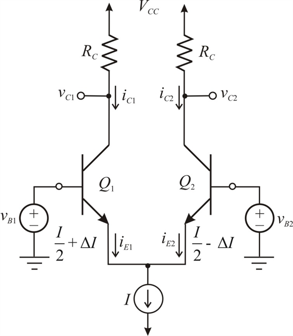

Refer to Figure 8.15 in the text book for the basic BJT differential pair configuration.
Write the expression for emitter currents of the two transistors.

Apply Kirchhoff’s current law to the circuit.
Take the ratio of the two currents.
Refer to Figure 8.15 in the text book for the basic BJT differential pair configuration.
Write the expression for emitter currents of the two transistors.
Apply Kirchhoff’s current law to the circuit.
Take the ratio of the two currents.
Simplify further.
Substitute I for .
To use the BJT differential pair as a linear amplifier, apply a very small differential signal (a few millivolts) that results in one of the transistors conducting a current of , the current in the other transistor is with  being proportional to the difference input voltage.
being proportional to the difference input voltage.

The current is,
The normalization gain is,
Substitute  for
for  .
.
Substitute for .
Determine  for .
for .
Determine for  .
.
 for .
for .
Determine  for .
for .
Tabulate the values.
| v id (mV) | 5 | 10 | 20. | 30 | 40 |
| | 9.97 | 9.87 | 9.499 | 8.95 | 8.3 |
Observe from the calculated values that as vid increases, the normalized gain, decreases.